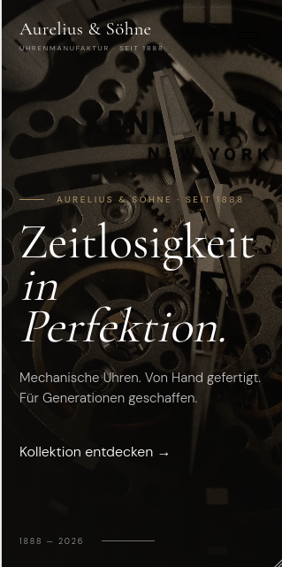

Aurelius & Söhne
Mechanische Uhrenmanufaktur
Ein digitaler Auftritt für eine traditionsbewusste Uhrenmanufaktur, der Handwerkskunst, Präzision und zeitlose Gestaltung miteinander verbindet.

Eine digitale Bühne für mechanische Uhrmacherkunst.
Für Aurelius & Söhne entstand eine Website, die den Charakter einer traditionsreichen Uhrenmanufaktur in die digitale Welt überträgt.
Im Mittelpunkt stehen die Uhren, ihre Details und die Geschichte hinter der Marke – reduziert präsentiert und mit viel Raum für hochwertige Bildwelten.
Tradition modern präsentieren.
Die Gestaltung sollte hochwertig und klassisch wirken, ohne dabei altmodisch zu werden. Gleichzeitig mussten Produkte, Geschichte und Markenwelt übersichtlich miteinander verbunden werden.
Besonderes Augenmerk lag auf einer ruhigen Gestaltung, die den Uhren selbst den nötigen Raum gibt.
Ruhe im Design.
Reduziert, klassisch und hochwertig.
Die Gestaltung verbindet eine elegante Typografie mit warmen, zurückhaltenden Farbtönen und großzügigen Bildflächen.
Produktseiten, Markengeschichte und Informationen zur Manufaktur wurden klar strukturiert, sodass die Website sowohl die Ästhetik als auch die handwerkliche Qualität der Marke vermittelt.

- Individuelles Webdesign
- Hochwertige Produktpräsentation
- Responsive Gestaltung
- Strukturierte Produkt- und Markenseiten
- Individuelle Bild- und Typografiegestaltung
- SEO-orientierte Seitenstruktur
Ein digitaler Auftritt, der Tradition und moderne Markenpräsentation verbindet.
Die Website schafft eine ruhige, hochwertige Umgebung für die Präsentation der Uhren und gibt der Marke einen eigenständigen digitalen Auftritt.